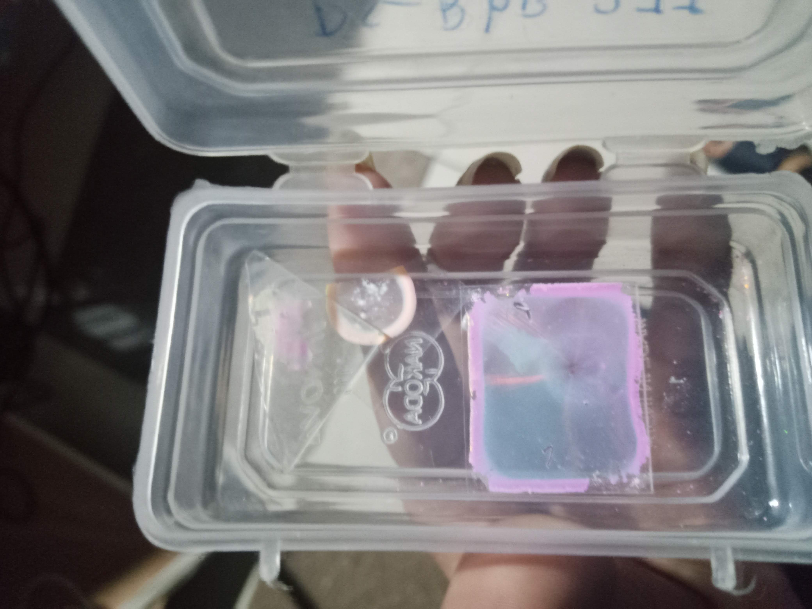

NanoPhotonics
Photonic CrystalNanophotonics or nano-optics is a part of nanotechnology that investigates the behavior of light on nanometer scales as well as interactions of nanometer-sized objects with light. Nanophotonics is also considered a branch of electrical engineering, optics, and optical engineering—as well as being a branch of nanotechnology. Nanophotonics often includes metallic components that can transport and focus light through surface plasmon polaritons
PS277
A photonic crystal is an optical nanostructure in which the refractive index changes periodically. This affects the propagation of light in the same way that the structure of natural crystals gives rise to X-ray diffraction and that the atomic lattices (crystal structure) of semiconductors affect their conductivity of electrons. Photonic crystals occur in nature in the form of structural coloration and animal reflectors, and, as artificially produced, promise to be useful in a range of applications.Photonic crystals can be fabricated for one, two, or three dimensions. One-dimensional photonic crystals can be made of thin film layers deposited on each other